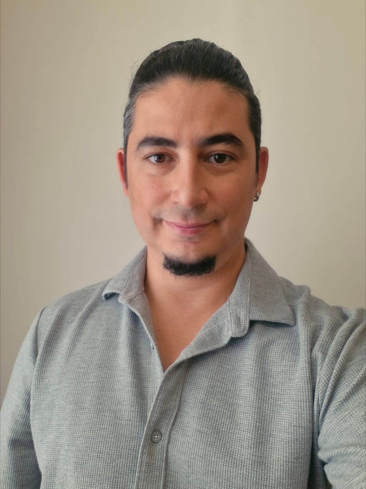
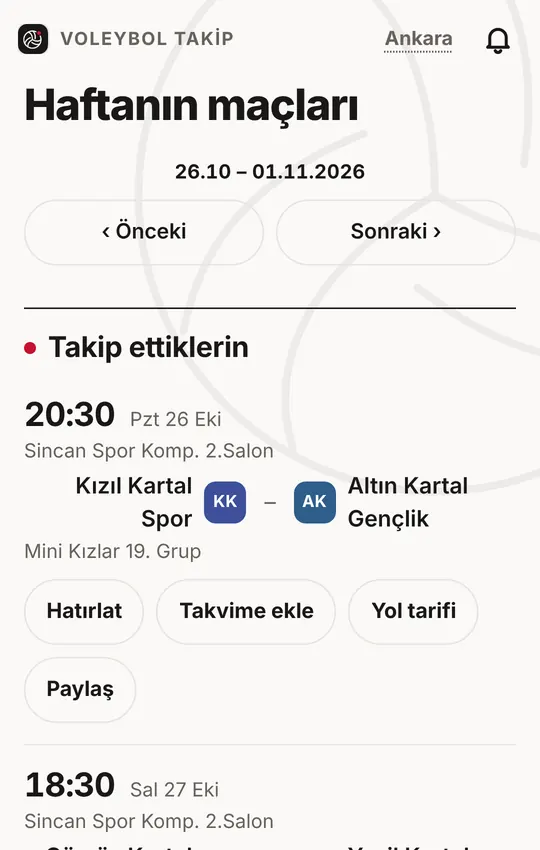
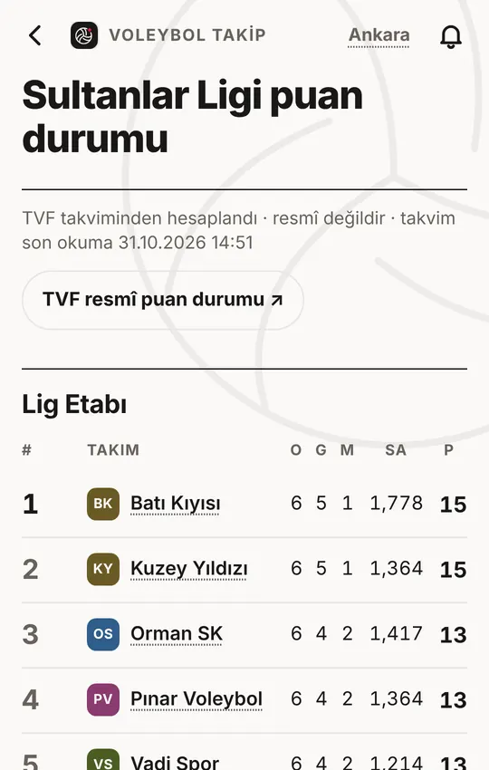

SPORTPLATFORM / WORKSPACEARAYÜZ ÇALIŞMASI · ÜRÜN EKRANI DEĞİLDİR
SportPlatform
Uzun süredir üzerinde çalıştığım spor yazılımı. Bir yandan ürünü geliştiriyor, bir yandan Claude Code ve Codex ile çalışma biçimimi burada deniyorum.
SENIOR SOFTWARE ENGINEER & TEAM LEAD
Ankara, TürkiyeAnkara’da yaşayan bir yazılım mühendisiyim. Çoğunlukla .NET ve backend ile çalışıyorum. İş dışında da voleybol oynuyor, antrenörlük ve spor yazılımlarıyla ilgileniyorum.

Şu sıralar en çok bu üç projeyle uğraşıyorum. Biri yayında, diğer ikisi hâlâ yapım aşamasında. Hepsinde yazılımla voleybol bir arada.
Uzun süredir üzerinde çalıştığım spor yazılımı. Bir yandan ürünü geliştiriyor, bir yandan Claude Code ve Codex ile çalışma biçimimi burada deniyorum.
Antrenör, kamerayla uğraşmadan bir pozisyonu tekrar izleyebilsin istiyorum. Sabit kamera ve tabletle çalışacak bu fikrin ilk sürümünü tasarlıyorum.


Altyapıda voleybol oynayan çocukların velileri ve antrenörleri için ücretsiz bir uygulama. Maç programını, sonuçları ve puan durumunu gösteriyor; takip edilen takımın maçı değişince bildirim gönderiyor.
AI ile çalışırken ne istediğimi ve nelerin korunması gerektiğini anlatıyorum. Uygulama tarafında ajana alan bırakıyorum. Sonra da ortaya çıkan iş gerçekten istediğimi yapıyor mu, ona bakıyorum.
Değişiklikten önce sistem şu anda ne yapıyor, onu anlamaya çalış.
Neye dokunulabilir, ne korunmalı, hangi sonuç doğru sayılacak?
Build ve testlere bak. Gerekiyorsa eski davranışla karşılaştır.
Çalışırken ve konuşurken dönüp geldiğim birkaç soru. Buraya kısa kısa not ediyorum.
Yazılım tarafında uzun zamandır backend, dağıtık sistemler ve kurumsal entegrasyonlarla uğraşıyorum. Şu anda Datasoft’ta kıdemli yazılım mühendisi ve takım lideri olarak çalışıyorum.
Ortaokuldan beri voleybol oynuyorum. Lisede takım kaptanıydım; sonrasında 1. Kademe Antrenörlük belgesini aldım. Hâlâ oynuyor, maç izliyor ve oyunun farklı taraflarıyla ilgileniyorum.
Voleybol hikâyemKurumsal muhasebe, .NET backend, e-Fatura ve e-Arşiv entegrasyonları. Clean Architecture ve DDD.
DAM Collector, Kafka ile olay işleme ve monolitten konteyner tabanlı mikroservislere geçiş.
Güvenlik, sistem modernizasyonu ve web tabanlı kurumsal sistemler.
Gerçek zamanlı kent güvenlik sistemleri ve ağ izleme.
Temiz oda otomasyonu ve dağıtık .NET bileşenleri.